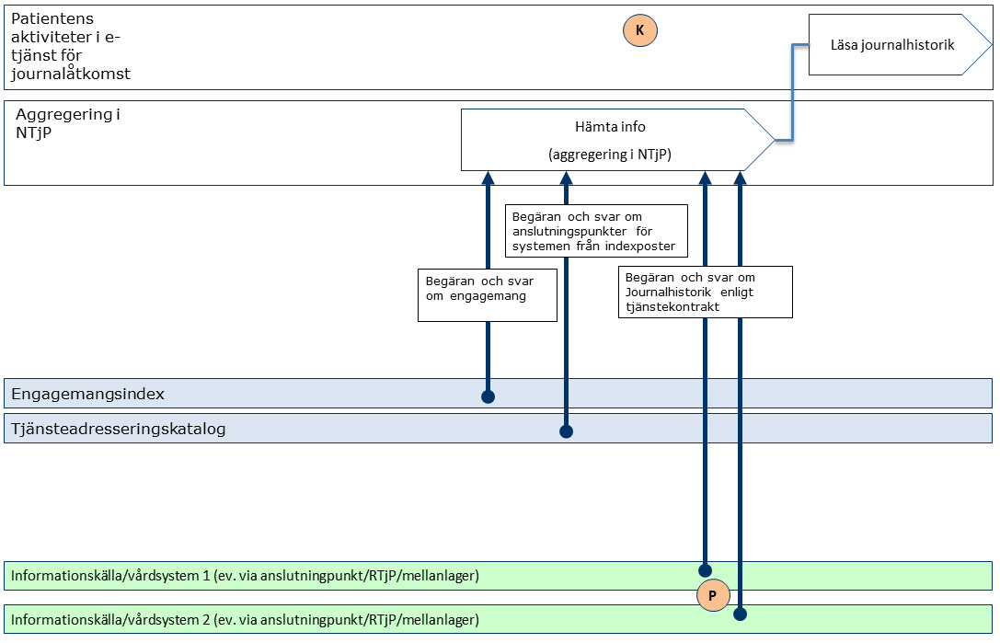
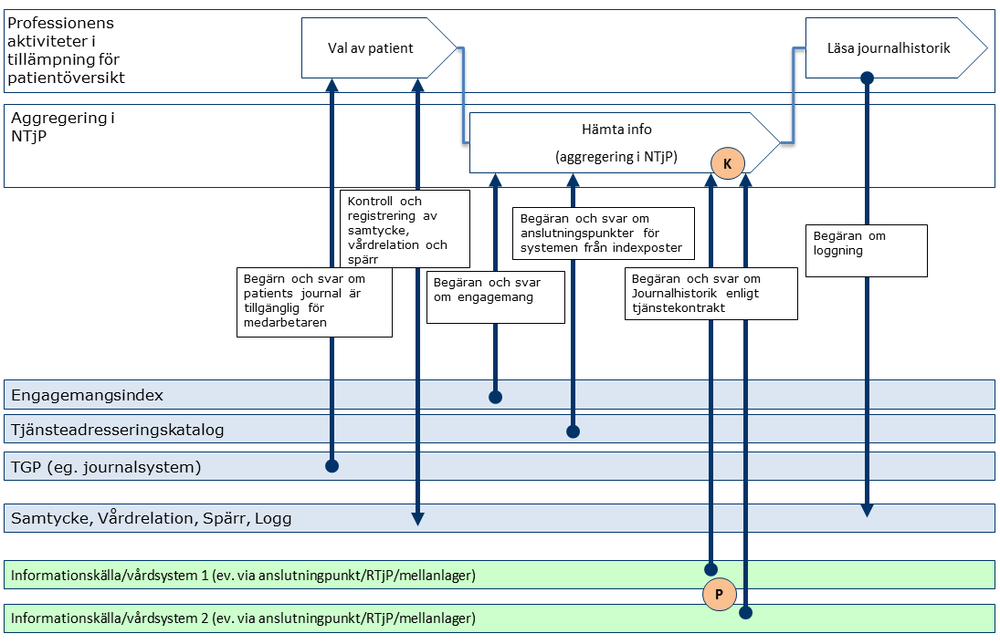
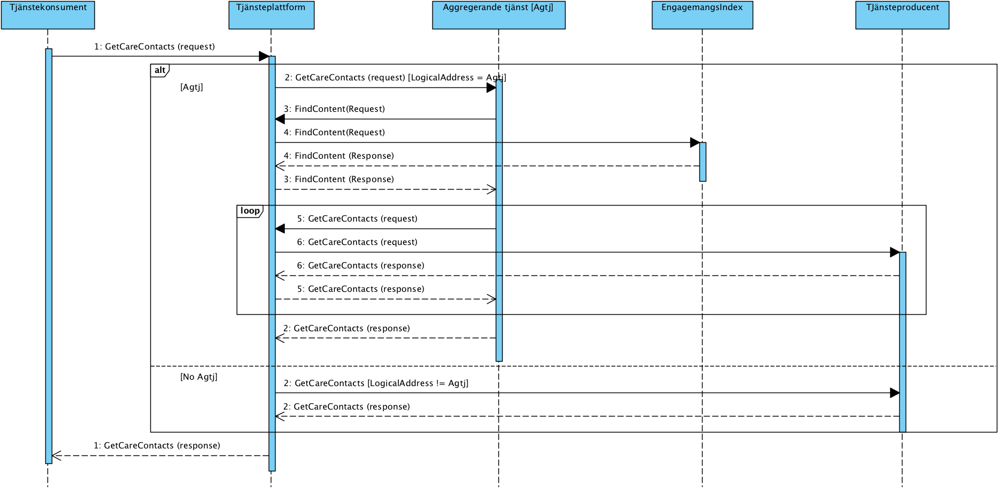

clinicalprocess: logistics: logistics
3.0.13 - draft
clinicalprocess: logistics: logistics - Local Development build (v3.0.13) built by the FHIR (HL7® FHIR® Standard) Build Tools. See the Directory of published versions
I detta avsnitt beskrivs hur T-boken tillämpats i tjänstedomänen. Avsnittet syftar till att ge läsaren överblick och förståelse. Avsnittet innehåller inga regler, men ger ett sammanhang för de regler som beskrivs i övriga delar av dokumentet. Tjänsterna i denna domän erbjuder sökning efter logistikrelaterad information från hälso- och sjukvårdens journal- och patientadministrativa system, såsom information om planerade och utförda vårdkontakter, samt information om vårdplaner. Utgångspunkten för tjänsterna i denna tjänstedomän är i första hand patientens och professionens behov av direktåtkomst till en patients vårdhistorik sett ur ett nationellt eller ett regionalt perspektiv. I båda fallen är syftet att historisk information sammanställs från det eller de källsystem där det finns historik via s.k. aggregerande tjänster, snarare än att begära information från ett specifikt system eller en specifik verksamhet. Tjänstekontrakten erbjuder även möjlighet att nå information från ett specifikt system eller en specifik verksamhet. Behovet av att rikta en fråga till ett specifikt system uppstår främst när tjänstekonsumenten också är prenumerant på notifieringar från engagemangsindex och på det sättet (via ProcessNotification) får information om en händelse i ett specifikt system. Det är då ändamålsenligt att adressera det specifika systemet, istället för den aggregerande tjänsten. Följande flödesmodeller beskriver översiktligt hur tjänstekontrakten är tänkta att användas. Tjänstekonsument (K) och tjänsteproducenter (P) är markerade i figurerna.
Nedanstående diagram visar hur flödet principiellt ser ut när information ur kontrakt i tjänstedomänen efterfrågas och hanteras (exemplifierat med GetCareContacts).

Figur Exempel: Adressering vid anrop till aggregerande tjänst från patienttjänst (t.ex. Journalen).
Figur Exempel: Adressering vid anrop till aggregerande vårdgivartjänst (t.ex. från NPÖ-tillämpningen).| Namn/beteckning | Beskrivning alt. referens |
|---|---|
| Patienten | Den patient som vill få tillgång till sina vårdkontakter. |

Figur Sekvensdiagram över sökning efter information där GetCareContacts används som exempel men samma princip gäller för alla kontrakt i tjänstedomänen, diagrammet visar på två alternativa sekvenser där det första alternativet gäller när aggregerande tjänster adresseras och det andra alternativet gäller när källsystemet adresseras.| Namn | Beskrivning |
|---|---|
| Tjänstekonsument | Det system som används för att konsumera information. Dvs det system som använder tjänster enligt ett tjänstekontrakt. |
| Tjänsteplattform | Tjänsteplattformen är det lager som hanterar virtuella tjänster, aggregerande tjänster samt anpassningstjänster. |
| Vårdinformationssystem | Det system som i detta fall utgör källsystemet som vårdpersonal direkt registrerar/uppdaterar/raderar information i. |
Tjänstedomänen definierar inga flöden, alla tjänstekontrakt är frivilliga.
Tjänstedomänen tillämpar källsystem-adressering. Observera att tjänstekonsumenter främst anropar aggregerande tjänster. Tjänstekonsumenten adresserar därför den aggregerande tjänsten med antingen nationellt HSA-id (Ineras HSA-id) eller HSA-id för aktuell huvudman om det är en regional/huvudmanna-specifik (t.ex. ”regional”) aggregerande tjänst som ska adresseras. Det finns också fall då en tjänstekonsument adresserar ett källsystem. Det förutsätter att tjänstekonsumenten känner till källsystemets HSA-id. Det sker genom att ett sådant anrop föregås av ett anrop till en aggregerande tjänst (källsystemets HSA-id finns då i svarsmeddelandet) eller genom att tjänstekonsumenten är producent för Engagemangsindex notifieringskontrakt (ProcessNotification). Notifieringen innehåller information om en händelse rörande en patients information i ett specifikt källsystem. Genom att använda informationen om källsystemets HSA-id kan tjänstekonsumenten direktadressera källsystemet i syfte att hämta information om den händelse som just notifierats för patienten. Adressering sker i enlighet med RIV Tekniska Anvisningar Översikt, Rev PD2, avsnitt 8.3, där mer information kan hittas.
| Åtkomstbehov för patientens journalhistorik | Logisk adress |
|---|---|
| Nationellt | Ineras HSA-id: 5565594230 |
| För en huvudman/region | Huvudmannens/regionens HSA-id |
| För ett källsystem | Källsystemets HSA-id |
Det behövs en aggregerande tjänst för varje tjänstekontrakt som läser data i denna domän. Aggregerande tjänster har samma tjänstekontrakt och anropsadress som en traditionell virtuell tjänst, men nås via olika logiska adresser. Om ett källsystemets HSA-id anges som logisk adress, kommer frågemeddelandet att dirigeras vidare direkt till källsystemet utav tjänsteplattformen utan att passera en aggregerande tjänst. Om logisk adress HSA-id för Inera eller en huvudman kommer anropet att dirigeras till aggregerande tjänsten som i sin tur – efter att ha konsulterat engagemangsindex – vidarebefordrar frågan till de källsystem som har information om patienten.